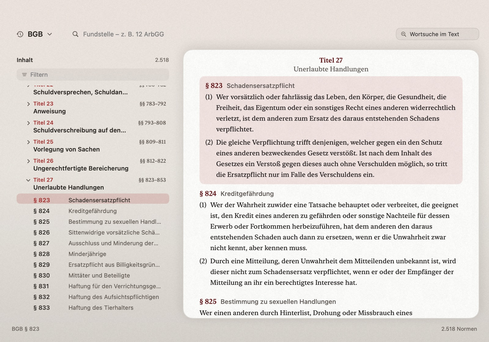

Normblick
Gesetze direkt vom Bildschirm
Wo ein Gesetzeszitat steht — im Schriftsatz, im Urteil, in der Mail — hält man die Wahltaste: Die Lupe liest die Norm und zeigt sofort den amtlichen Wortlaut, die zitierte Stelle hervorgehoben. Ohne Umweg, ohne Kopieren, ohne Datenbank-Recherche.
Demnächst im Mac App Store
Jetzt kostenlos testen
